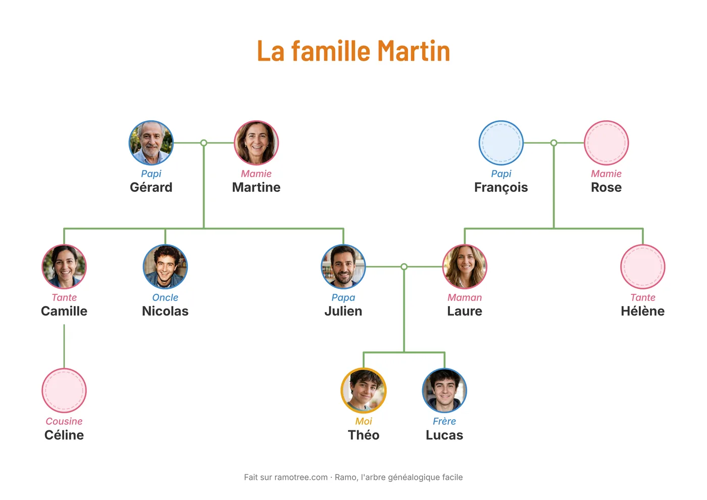

Arbre généalogique pour enfants : comment le faire pour l'école
« Il faut apporter l'arbre généalogique demain. » Si ça vous dit quelque chose, voici un modèle gratuit à imprimer, des idées pour qu'il soit joli et comment le faire avec votre enfant sans stress.
C'est fait en quelques minutes : créez votre arbre ici, avec les prénoms et les photos de chacun ou des places pour dessiner, et téléchargez-le pour l'imprimer.

Ce que l'école demande en général
En maternelle et en primaire, c'est souvent un arbre de trois générations : l'enfant, ses parents et ses grands-parents, avec une photo ou un dessin de chacun. Plus tard, on ajoute parfois les arrière-grands-parents, les oncles et les cousins, ou on le demande en anglais pour réviser le vocabulaire de la famille.
Étape par étape avec votre enfant
- C'est lui qui pose les questions. Un appel ou une visite aux grands-parents pour demander leur nom, où ils sont nés et comment ils étaient petits. C'est ce dont les enfants se souviennent le plus.
- Photos ou dessins. Imprimez de petites photos ou laissez-le dessiner chacun dans sa case.
- Remplissez le modèle. Les prénoms, bien écrits, et l'année de naissance s'il y a de la place.
- Décorez-le. Collez-le sur un carton, dessinez un tronc et un feuillage, ou faites les feuilles avec l'empreinte de ses mains.
Des idées pour qu'il soit joli
- Une affiche avec un arbre dessiné et les photos sur les feuilles.
- Une branche par côté de la famille, chacune d'une couleur.
- Le faire sur le téléphone avec Ramo et l'apporter imprimé : il sort avec la photo de chacun, en A4 ou en A3, et on peut l'imprimer en grand pour l'afficher en classe.
Quand la famille ne rentre pas dans le modèle
Parents séparés, familles recomposées, adoption, deux mamans ou deux papas, grands-parents disparus… Le modèle n'est qu'un point de départ : barrez, ajoutez des cases ou dessinez de nouvelles branches. L'important, c'est que l'enfant reconnaisse sa famille. Dans Ramo, chacun peut avoir plusieurs conjoints, et l'arbre se place tout seul.
La famille en anglais
Si l'arbre doit être fait en anglais (« My family tree ») :
| Français | Anglais |
|---|---|
| père, mère (papa, maman) | father, mother (dad, mum ou mom) |
| parents | parents |
| frère, sœur | brother, sister |
| grand-père, grand-mère | grandfather, grandmother (grandpa, grandma) |
| grands-parents | grandparents |
| arrière-grand-père, arrière-grand-mère | great-grandfather, great-grandmother |
| oncle, tante | uncle, aunt |
| cousin, cousine | cousin |
| fils, fille | son, daughter |
| petit-fils, petite-fille | grandson, granddaughter |
| mari, femme | husband, wife |
Pour le présenter : « This is my grandmother. Her name is Monique. » Et si un lien compliqué apparaît, le calculateur de parenté l'explique.
Autres guides